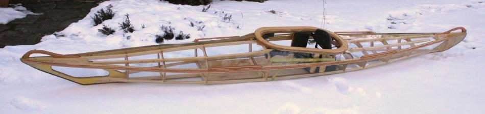

| Sea Cruiser by Russ Swadener (US) | Menu Last Page Next Page |
|

Russ has recently reskinned the Sea Cruiser with clear Vinyl to show off the wood frame. He reports that the skin is much easier to get on tight and wrinkle free if you start from the middle near the cockpit and work your way to the ends in 2 separate passes. A heat gun also makes the job a lot easier.
|
|